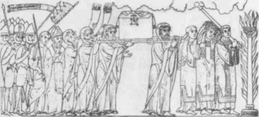
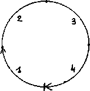

The Order of the Ark of the Israelites

We call any specific formalization of expression a regime of signs, at least when the expression is linguistic. A regime of signs constitutes a semiotic system. But it appears difficult to analyze semiotic systems in themselves: there is always a form of content that is simultaneously inseparable from and independent of the form of expression, and the two forms pertain to assemblages that are not principally linguistic. However, one can proceed as though the formalization of expression were autonomous and self-sufficient. Even if that is done, there is such diversity in the forms of expression, such a mixture of these forms, that it is impossible to attach any particular privilege to the form or regime of the “signifier.” If we call the signifying semiotic system semiology, then semiology is only one regime of signs among others, and not the most important one. Hence the necessity of a return to pragmatics, in which language never has universality in itself, self-sufficient formalization, a general semiology, or a meta language. Thus it is the study of the signifying regime that first testifies to the inadequacy of linguistic presuppositions, and in the very name of regimes of signs.
There is a simple general formula for the signifying regime of the sign (the signifying sign): every sign refers to another sign, and only to another sign, ad infinitum. That is why, at the limit, one can forgo the notion of the sign, for what is retained is not principally the sign’s relation to a state of things it designates, or to an entity it signifies, but only the formal relation of sign to sign insofar as it defines a so-called signifying chain. The limitlessness of signifiance replaces the sign. When denotation (here, designation and signification taken together) is assumed to be part of connotation, one is wholly within this signifying regime of the sign. Not much attention is paid to indexes, in other words, the territorial states of things constituting the designatable. Not much attention is paid to icons, that is, operations of reterritorialization constituting the signifiable. Thus the sign has already attained a high degree of relative deterritorialization; it is thought of as a symbol in a constant movement of referral from sign to sign. The signifier is the sign in redundancy with the sign. All signs are signs of signs. The question is not yet what a given sign signifies but to which other signs it refers, or which signs add themselves to it to form a network without beginning or end that projects its shadow onto an amorphous atmospheric continuum. It is this amorphous continuum that for the moment plays the role of the “signified,” but it continually glides beneath the signifier, for which it serves only as a medium or wall: the specific forms of all contents dissolve in it. The atmospherization or mundanization of contents. Contents are abstracted. This is the situation Levi-Strauss describes: the world begins to signify before anyone knows what it signifies; the signified is given without being known.1 Your wife looked at you with a funny
expression. And this morning the mailman handed you a letter from the IRS and crossed his fingers. Then you stepped in a pile of dog shit. You saw two sticks on the sidewalk positioned like the hands of a watch. They were whispering behind your back when you arrived at the office. It doesn’t matter what it means, it’s still signifying. The sign that refers to other signs is struck with a strange impotence and uncertainty, but mighty is the signifier that constitutes the chain. The paranoiac shares this impotence of the deterritorialized sign assailing him from every direction in the gliding atmosphere, but that only gives him better access to the superpower of the signifier, through the royal feeling of wrath, as master of the network spreading through the atmosphere. The paranoid despotic regime: they are attacking me and making me suffer, but I can guess what they’re up to, I’m one step ahead of them, I’ve always known, I have power even in my impotence. “I’ll get them.” Nothing is ever over and done with in a regime of this kind. It’s made for that, it’s the tragic regime of infinite debt, to which one is simultaneously debtor and creditor. A sign refers to another sign, into which it passes and which carries it into still other signs. “To the point that it returns in a circular fashion …” Not only do signs form an infinite network, but the network of signs is infinitely circular. The statement survives its object, the name survives its owner. Whether it passes into other signs or is kept in reserve for a time, the sign survives both its state of things and its signified; it leaps like an animal or a dead person to regain its place in the chain and invest a new state, a new signified, from which it will in turn extricate itself.2 A hint of the eternal return. There is a whole regime of roving, floating statements, suspended names, signs lying in wait to return and be propelled by the chain. The signifier as the self-redundancy of the deterri-torialized sign, a funereal world of terror.
But what counts is less this circularity of signs than the multiplicity of the circles or chains. The sign refers not only to other signs in the same circle, but to signs in other circles or spirals as well. Robert Lowie describes how Crow and Hopi men react differently when their wives cheat on them (the Crow are nomadic hunters and the Hopi sedentaries with an imperial tradition): “A Crow Indian whose wife has cheated on him slashes her face, whereas the Hopi who has fallen victim to the same misfortune, without losing his calm, withdraws and prays for drought and famine to descend on the village.” It is easy to see where the paranoia resides, the despotic element or signifying regime, or again, as Levi-Strauss says, “the bigotry”: “In effect, for a Hopi everything is connected: a social disturbance or a domestic incident calls into question the system of the universe, the levels of which are united by multiple correspondences; a disruption on one plane is only intelligible, and morally tolerable, as a projection of other disruptions involving other levels.”3 The Hopi jump from one circle to another, or from one sign to another on a different spiral. One leaves the village or the city, only to return. The jumps may be regulated not only by presignifying rituals but also by a whole imperial bureaucracy passing judgment on their legitimacy. The jumps are not made at random, they are not without rules. Not only are they regulated, but some are prohibited: Do not overstep the outermost circle, do not approach the innermost circle… There is a distinction between circles because, although all signs refer to each other only to the extent that they are deterritorialized, oriented toward the same center of signifiance, distributed throughout an amorphous continuum, they have different speeds of deterritorialization attesting to a place of origin (temple, palace, house, street, village, bush, etc.), and they have differential relations maintaining the distinction between circles or constituting thresholds in the atmosphere of the continuum (private and public, family incident and social disorder). Moreover, the distribution of these thresholds and circles changes according to the case. Deception is fundamental to the system. Jumping from circle to circle, always moving the scene, playing it out somewhere else: such is the hysteric operation of the deceiver as subject, answering to the paranoid operation of the despot installed in his center of signifiance.
There is one other aspect: the signifying regime is not simply faced with the task of organizing into circles signs emitted from every direction; it must constantly assure the expansion of the circles or spiral, it must provide the center with more signifier to overcome the entropy inherent in the system and to make new circles blossom or replenish the old. Thus a secondary mechanism in the service of signifiance is necessary: interpretance or interpretation. This time the signifier assumes a new figure: it is no longer the amorphous continuum that is given without being known and across which the network of signs is strung. A portion of signified is made to correspond to a sign or group of signs for which that signified has been deemed suitable, thus making it knowable. To the syntagmatic axis of the sign referring to other signs is added a paradigmatic axis on which the sign, thus formalized, fashions for itself a suitable signified (once again there is abstraction of the content, but in a new way). The interpretive priest, the seer, is one of the despot-god’s bureaucrats. A new aspect of deception arises, the deception of the priest: interpretation is carried to infinity and never encounters anything to interpret that is not already itself an interpretation. The signified constantly reimparts signifier, recharges it or produces more of it. The form always comes from the signifier. The ultimate signified is therefore the signifier itself, in its redundancy or “excess.” It is perfectly futile to claim to transcend interpretation or even communication through the production of signifier, because communication and interpretation are what always serve to reproduce and produce signifier. That is certainly not the way to revive the notion of production. The discovery of the psychoanalyst-priests (a discovery every kind of priest or seer made in their time) was that interpretation had to be subordinated to signifiance, to the point that the signifier would impart no signified without the signified reimparting signifier in its turn. Actually, there is no longer even any need to interpret, but that is because the best interpretation, the weightiest and most radical one, is an eminently significant silence. It is well known that although psychoanalysts have ceased to speak, they interpret even more, or better yet, fuel interpretation on the part of the subject, who jumps from one circle of hell to the next. In truth, signifiance and interpretosis are the two diseases of the earth or the skin, in other words, humankind’s fundamental neurosis.
There is not much to say about the center of signifiance, or the Signifier in person, because it is a pure abstraction no less than a pure principle; in other words, it is nothing. Lack or excess, it hardly matters. It comes to the same thing to say that the sign refers to other signs ad infinitum and that the infinite set of all signs refers to a supreme signifier. At any rate, this pure formal redundancy of the signifier could not even be conceptualized if it did not have its own substance of expression, for which we must find a name: faciality. Not only is language always accompanied by faciality traits, but the face crystallizes all redundancies, it emits and receives, releases and recaptures signifying signs. It is a whole body unto itself: it is like the body of the center of signifiance to which all of the deterritorialized signs affix themselves, and it marks the limit of their deterritorialization. The voice emanates from the face; that is why, however fundamentally important the writing machine is in the imperial bureaucracy, what is written retains an oral or nonbook character. The face is the Icon proper to the signifying regime, the reterritorialization internal to the system. The signifier reterritorializes on the face. The face is what gives the signifier substance; it is what fuels interpretation, and it is what changes, changes traits, when interpretation reimparts signifier to its substance. Look, his expression changed. The signifier is always facialized. Faciality reigns materially over that whole constellation of signifiances and interpretations (psychologists have written extensively on the baby’s relations to the mother’s face, and sociologists on the role of the face in mass media and advertising). The despot-god has never hidden his face, far from it: he makes himself one, or even several. The mask does not hide the face, it is the face. The priest administers the face of the god. With the despot, everything is public, and everything that is public is so by virtue of the face. Lies and deception may be a fundamental part of the signifying regime, but secrecy is not.4 Conversely, when the face is effaced, when the faciality traits disappear, we can be sure that we have entered another regime, other zones infinitely muter and more imperceptible where subterranean becomings-animal occur, becomings-molecular, nocturnal deterritorializations over-spilling the limits of the signifying system. The despot or god brandishes the solar face that is his entire body, as the body of the signifier. He looked at me queerly, he knitted his brow, what did I do to make him change expression? I have her picture in front of me, it’s as if she were watching me … Surveillance by the face, as Strindberg said. Overcoding by the signifier, irradiation in all directions, unlocalized omnipresence.
Finally, the face or body of the despot or god has something like a counterbody: the body of the tortured, or better, of the excluded. There is no question that these two bodies communicate, for the body of the despot is sometimes subjected to trials of humiliation or even torture, or of exile and exclusion. “At the opposite pole one might imagine placing the body of 16 □ 587 B.C.-A.D. 70: ON SEVERAL REGIMES OF SIGNS
the condemned man; he, too, has his legal status; he gives rise to his own ceremonial… not in order to ground the surplus power possessed by the person of the sovereign, but in order to code the lack of power with which those subjected to punishment are marked. In the darkest region of the political field the condemned man outlines the symmetrical, inverted figure of the king.”5 The one who is tortured is fundamentally one who loses his or her face, entering into a becoming-animal, a becoming-molecular the ashes of which are thrown to the wind. But it appears that the one who is tortured is not at all the final term, but rather the first step before exclusion. Oedipus, at least, understood that. He tortured himself, gouged out his own eyes, then went away. The rite, the becoming-animal of the scapegoat clearly illustrates this: a first expiatory animal is sacrificed, but a second is driven away, sent out into the desert wilderness. In the signifying regime, the scapegoat represents a new form of increasing entropy in the system of signs: it is charged with everything that was “bad” in a given period, that is, everything that resisted signifying signs, everything that eluded the referral from sign to sign through the different circles; it also assumes everything that was unable to recharge the signifier at its center and carries off everything that spills beyond the outermost circle. Finally, and especially, it incarnates that line of flight the signifying regime cannot tolerate, in other words, an absolute deterritorialization; the regime must block a line of this kind or define it in an entirely negative fashion precisely because it exceeds the degree of deterritorialization of the signifying sign, however high it may be. The line of flight is like a tangent to the circles of
signifiance and the center of the signifier. It is under a curse. The goat’s anus stands opposite the face of the despot or god. Anything that threatens to put the system to flight will be killed or put to flight itself. Anything that exceeds the excess of the signifier or passes beneath it will be marked with a negative value. Your only choice will be between a goat’s ass and the face of the god, between sorcerers and priests. The complete system, then, consists of the paranoid face or body of the despot-god in the signifying center of the temple; the interpreting priests who continually recharge the signified in the temple, transforming it into signifier; the hysterical crowd of people outside, clumped in tight circles, who jump from one circle to another; the faceless, depressive scapegoat emanating from the center, chosen, treated, and adorned by the priests, cutting across the circles in its headlong flight into the desert. This excessively hasty overview is applicable not only to the imperial despotic regime but to all subjected, arborescent, hierarchical, centered groups: political parties, literary movements, psychoanalytic associations, families, conjugal units, etc. The photo, faciality, redundancy, signifiance, and interpretation are at work everywhere. The dreary world of the signifier; its archaism with an always contemporary function; its essential deception, connoting all of its aspects; its profound antics. The signifier reigns over every domestic squabble, and in every State apparatus.
The signifying regime of the sign is defined by eight aspects or principles: (1) the sign refers to another sign, ad infinitum (the limitlessness of signifiance, which deterritorializes the sign); (2) the sign is brought back by other signs and never ceases to return (the circularity of the deterrito-rialized sign); (3) the sign jumps from circle to circle and constantly displaces the center at the same time as it ties into it (the metaphor or hysteria of signs); (4) the expansion of the circles is assured by interpretations that impart signified and reimpart signifier (the interpretosis of the priest); (5) the infinite set of signs refers to a supreme signifier presenting itself as both lack and excess (the despotic signifier, the limit of the system’s deterrito-rialization); (6) the form of the signifier has a substance, or the signifier has a body, namely, the Face (the principle of faciality traits, which constitute a reterritorialization); (7) the system’s line of flight is assigned a negative value, condemned as that which exceeds the signifying regime’s power of deterritorialization (the principle of the scapegoat); (8) the regime is one of universal deception, in its jumps, in the regulated circles, in the seer’s regulation of interpretations, in the publicness of the facialized center, and in the treatment of the line of flight.
Not only is this semiotic system not the first, but we see no reason to accord it any particular privilege from the standpoint of an abstract evolutionism. We would like to indicate very briefly certain characteristics of the other two semiotic systems. First, the so-called primitive, presignifying semiotic, which is much closer to “natural” codings operating without signs. There is no reduction to faciality as the sole substance of expression: there is no elimination of forms of content through abstraction of the signified. To the extent that there is still abstraction of content from a strictly semiotic point of view, it fosters a pluralism or polyvocality of forms of expression that prevents any power takeover by the signifier and preserves expressive forms particular to content; thus forms of corporeality, gesturality, rhythm, dance, and rite coexist heterogeneously with the vocal form.6 A variety of forms and substances of expression intersect and form relays. It is a segmentary but plurilinear, multidimensional semiotic that wards off any kind of signifying circularity. Segmentarity is the law of the lineages. Here, the sign owes its degree of relative deterritorialization not to a perpetual referral to other signs but rather to a confrontation between the territorialities and compared segments from which each sign is extracted (the camp, the bush, the moving of the camp). Not only is the polyvocality of statements preserved, but it is possible to finish with a statement: A name that has been used up is abolished, a situation quite unlike the placing in reserve or transformation occurring in the signifying semiotic. The meaning of cannibalism in a presignifying regime is precisely this: eating the name, a semiography that is fully a part of a semiotic in spite of its relation to content (the relation is an expressive one).7 It should not be thought that a semiotic of this kind functions by ignorance, repression, or foreclosure of the signifier. On the contrary, it is animated by a keen presentiment of what is to come. It does not need to understand it to fight against it. It is wholly destined by its very segmentarity and poly-vocality to avert the already-present threat: universalizing abstraction, erection of the signifier, circularity of statements, and their correlates, the State apparatus, the instatement of the despot, the priestly caste, the scapegoat, etc. Every time they eat a dead man, they can say: one more the State won’t get.
There is another semiotic, the countersignifying semiotic (whose most notable representatives are the fearsome, warlike, and animal-raising nomads, as opposed to hunter nomads, who belong to the previous semiotic). This time, the semiotic proceeds less by segmentarity than by arithmetic and numeration. Of course, the number already played a role of great importance in the division and union of segmentary lineages; it also had a function of decisive importance in the signifying imperial bureaucracy. But that was a kind of number that represented or signified, a number “incited, produced, caused by something other than itself.” On the contrary, a numerical sign that is not produced by something outside the system of marking it institutes, which marks a mobile and plural distribution, which itself determines functions and relations, which arrives at arrangements rather than totals, distributions rather than collections, which operates more by breaks, transitions, migration, and accumulation than by combining units — a sign of this kind would appear to belong to the semiotic of a nomad war machine directed against the State apparatus. The numbering number.8 Its numerical organization into tens, fifties, hundreds, thousands, etc., and the associated spatial organization were obviously adopted by State armies, but basically bear witness to a military system specific to the great nomads of the steppes, from the Hyksos to the Mongols. They were superposed upon the principle of lineage. Secrecy and spying are important elements of the war machine’s semiotic of Numbers. The role of Numbers in the Bible is not unrelated to the nomads, since Moses got the idea from his father-in-law, Jethro the Kenite: he used it as an organizational principle for the march and migration, and applied it himself to the military domain. In this countersignifying regime, the imperial despotic line of flight is replaced by a line of abolition that turns back against the great empires, cuts across them and destroys them, or else conquers them and integrates with them to form a mixed semiotic. We would like to go into greater detail on a fourth regime of signs, the postsignifying regime, which has different characteristics opposing it to signifiance and is defined by a unique procedure, that of “subjecti-fication.”
There are many regimes of signs. Our own list is arbitrarily limited. There is no reason to identify a regime or a semiotic system with a people or historical moment. There is such mixture within the same period or the same people that we can say no more than that a given people, language, or period assures the relative dominance of a certain regime. Perhaps all semiotics are mixed and not only combine with various forms of content but also combine different regimes of signs. Presignifying elements are always active in the signifying regime; countersignifying elements are always present and at work within it; and postsignifying elements are already there. Even that is to mark too much temporality. The semiotics and their mixtures may appear in a history of confrontation and intermingling of peoples, but also in languages in which there are several competing functions, or in a psychiatric hospital in which different forms of insanity coexist among the patients or even combine in a single patient; or in an ordinary conversation in which people are speaking the same tongue but different languages (all of a sudden a fragment of an unexpected semiotic surfaces). We are not suggesting an evolutionism, we are not even doing history. Semiotic systems depend on assemblages, and it is the assemblages that determine that a given people, period, or language, and even a given style, fashion, pathology, or minuscule event in a limited situation, can assure the predominance of one semiotic or another. We are trying to make maps of regimes of signs: we can turn them around or retain selected coordinates or dimensions, and depending on the case we will be dealing with a social formation, a pathological delusion (d’elire), a historical event, etc. We will see this on another occasion when we deal with a dated social system, “courtly love,” and then switch to a private enterprise called “masochism.” We can also combine maps or separate them. To make the distinction between two types of semiotics (for example, the postsignifying regime and the signifying regime), we must consider very diverse domains simultaneously.
In the first years of the twentieth century, psychiatry, at the height of its clinical skills, confronted the problem of nonhallucinatory delusions in which mental integrity is retained without “intellectual diminishment.” There was a first major grouping, paranoid or interpretive delusions, which already subsumed various aspects. But the question of the possible independence of another group was prefigured in Esquirol’s monomania and Kraepelin’s querulous delusion, and later defined by Serieux and Capgras as grievance delusion, and by Clerambault as passional delusion (“querulousness or seeking redress, jealousy, erotomania”). Basing ourselves on very fine studies of Serieux and Capgras on the one hand, and Clerambault on the other (the latter took the distinction furthest), we will contrast a paranoid-interpretive ideal regime of signifiance with a passional, postsignifying subjective regime. The first regime is defined by an insidious onset and a hidden center bearing witness to endogenous forces organized around an idea; by the development of a network stretching across an amorphous continuum, a gliding atmosphere into which the slightest incident may be carried; by an organization of radiating circles expanding by circular irradiation in all directions, and in which the individual jumps from one point to another, one circle to another, approaches the center then moves away, operates prospectively and retrospectively; and by a transformation of the atmosphere, as a function of variable traits or secondary centers clustered around a principal nucleus. The second regime, on the contrary, is defined by a decisive external occurrence, by a relation with the outside that is expressed more as an emotion than an idea, and more as effort or action than imagination (“active delusion rather than ideational delusion”); by a limited constellation operating in a single sector; by a “postulate” or “concise formula” serving as the point of departure for a linear series or proceeding that runs its course, at which point a new proceeding begins. In short, it operates by the linear and temporal succession of finite proceedings, rather than by the simultaneity of circles in unlimited expansion.9
This story of two kinds of delusions without intellectual diminishment is of great importance. For it is not a disruption of a preexisting discipline of psychiatry; it lies at the heart of the constitution of the psychiatrist in the nineteenth century and explains why he or she was from the start what he or she has been ever since: the psychiatrist was born cornered, caught between legal, police, humanitarian demands, accused of not being a true doctor, suspected of mistaking the sane for mad and the mad for sane, prey to quandaries of conscience, the last Hegelian belle ame. If we consider the two types of intact delusions, we can say that people in the first group seem to be completely mad, but aren’t: President Schreber developed his radiating paranoia and relations with God in every direction, but he was not mad in that he remained capable of managing his wealth wisely and distinguishing between circles. At the other pole are those who do not seem mad in any way, but are, as borne out by their sudden actions, such as quarrels, arsons, murders (Esquirol’s four great monomanias, erotic, intellectual, arson, and homocidal, already belong in this category). In short, psychiatry was not at all constituted in relation to the concept of madness, or even as a modification of that concept, but rather by its split in these two opposite directions. And is it not our own double image, all of ours, that psychiatry thus reveals: seeming mad withoutt>eing it, then being it without seeming it? (This twofold assertion is also psychoanalysis’s point of departure, its way of linking into psychiatry: we seem to be mad but aren’t, observe the dream; we are mad but don’t seem to be, observe everyday life.) Thus psychiatrists were alternately in the position of on the one hand pleading for tolerance and understanding, underscoring the uselessness of confinement, appealing for open-door asylums; and on the other arguing for stepped-up surveillance and special high-security asylums, stricter measures necessitated by the fact that the mad seemed not to be.10 Is it by chance that the distinction between the two major kinds of delusions, ideational and active, in many ways recapitulates the distinction between the classes (paranoiacs do not particularly need to be committed, they are usually bourgeois, whereas monomaniacs, passional redress-seekers, are most often from the working and rural classes, or are marginal, as in the case of political assassins).” A class with radiant, irradiating ideas (but of course!) against a class reduced to linear, sporadic, partial, local actions … All paranoiacs are not bourgeois, all passionals or monomaniacs are not proletarian. But God and his psychiatrists are charged with recognizing, among these de facto mixes, those who preserve, even in delusion, the class-based social order, and those who sow disorder, even strictly localized, such as haystack fires, parental murders, declasse love and aggression.
We are trying, then, to make a distinction between a paranoid, signifying, despotic regime of signs and a passional or subjective, postsignifying, authoritarian regime. Authoritarian is assuredly not the same as despotic, passional is not the same as paranoid, and subjective is not the same as signifying. What happens in the second regime, by comparison with the signifying regime as we have already defined it? In the first place, a sign or packet of signs detaches from the irradiating circular network and sets to work on its own account, starts running a straight line, as though swept into a narrow, open passage. Already the signifying system drew a line of flight or deterritorialization exceeding the specific index of its deterritorialized signs, but the system gave that line a negative value and sent the scapegoat fleeing down it. Here, it seems that the line receives a positive sign, as though it were effectively occupied and followed by a people who find in it their reason for being or destiny. Once again, we are not, of course, doing history: we are not saying that a people invents this regime of signs, only that at a given moment a people effectuates the assemblage that assures the relative dominance of that regime under certain historical conditions (and that regime, that dominance, that assemblage may be assured under other conditions, for example, pathological, literary, romantic, or entirely mundane). We are not saying that a people is possessed by a given type of delusion but that the map of a delusion, its coordinates considered, may coincide with the map of a people, its coordinates considered. The paranoid Pharaoh and the passional Hebrew? In the case of the Jewish people, a group of signs detaches from the Egyptian imperial network of which it was a part and sets off down a line of flight into the desert, pitting the most authoritarian of subjectivities against despotic signifiance, the most passional and least interpretive of delusions against interpretational paranoid delusion, in short, a linear “proceeding and grievance” against the irradiating circular network. Your grievance, your proceeding: that is Moses’ word to his people, and the proceedings come one after the other along a line of Passion.12 From this Kafka derives his own conception of querulousness or the proceeding, and the succession of linear segments: the father-proceeding, hotel-proceeding, ship-proceeding, court-proceeding…
We cannot overlook the most fundamental or extensive event in the history of the Jewish people: the destruction of the Temple, in two stages (587
B.C. and A.D. 70). The whole history of the Temple — the mobility and fragility of the ark, then the construction of a House by Solomon, its reconstruction under Darius, etc. — has meaning only in relation to renewed proceedings of destruction, the two supreme moments of which came with Nebuchadnezzar and Titus. A temple, mobile, fragile, or destroyed: the ark is no more than a little portable packet of signs. An entirely negative line of flight occupied by the animal or scapegoat laden with all the dangers threatening the signifier has become an impossibility. Let misfortune befall us: this formula punctuates Jewish history. It is we who must follow the most deterritorialized line, the line of the scapegoat, but we will change its sign, we will turn it into the positive line of our subjectivity, our Passion, our proceeding or grievance. We will be our own scapegoat. We will be the lamb: “The God who, like a lion, was given blood sacrifice must be shoved into the background, and the sacrificed god must occupy the foreground.
… God became the animal that was slain, instead of the animal that does the slaying.”13 We will follow, we will wed the tangent separating the land from the waters, we will separate the circular network from the gliding continuum, we will make the line of separation our own, in order to forge our path along it and dissociate the elements of the signifier (the dove of the ark). A narrow line of march, an in-between that is not a mean but a slender line. There is a Jewish specificity, immediately affirmed in a semiotic system. This semiotic, however, is no less mixed than any other. On the one hand, it is intimately related to the countersignifying regime of the nomads (the Hebrews had a nomadic past, a continuing relationship with the nomadic numerical organization that inspired them, and their own particular becoming-nomad; their line of deterritorialization owed much to the military line of nomadic destruction).14 On the other hand, it has an essential relation to the signifying semiotic itself, for which the Hebrews and their God would always be nostalgic: reestablish an imperial society and integrate with it, enthrone a king like everybody else (Samuel), rebuild a temple that would finally be solid (David and Solomon, Zachariah), erect the spiral of the Tower of Babel and find the face of God again; not just bring the wandering to a halt, but overcome the diaspora, which itself exists only as a function of an ideal regathering. We only have space to indicate what, in this mixed semiotic, bears witness to the new postsignifying subjective or passional regime.
Faciality undergoes a profound transformation. The god averts his face, which must be seen by no one; and the subject, gripped by a veritable fear of the god, averts his or her face in turn. The averted faces, in profile, replace the frontal view of the radiant face. It is this double turning away that draws the positive line of flight. The prophet is the main figure in this assemblage; he needs a sign to guarantee the word of God, he is himself marked by a sign indicating the special regime to which he belongs. It is Spinoza who has elaborated the profoundest theory of prophetism, taking into account the semiotic proper to it. Cain, who turns away from the God who turns away from him, already follows the line of deterritorialization, protected by a sign allowing him to escape death. The mark of Cain. A punishment worse than imperial death? The Jewish God invented the reprieve, existence in reprieve, indefinite postponement.15 But He also invented the positivity of alliance, or the covenant, as the new relation with the deity, since the subject remains alive. Abel, whose name is vanity, is nothing; Cain is the true man. This is very different from the system of rigging or deception animating the face of the signifier, the interpretation of the seer and the displacements of the subject. It is the regime of betrayal, universal betrayal, in which the true man never ceases to betray God just as God betrays man, with the wrath of God defining the new positivity. Before his death, Moses receives the words of the great song of betrayal. Even the prophet, unlike the seer-priest, is fundamentally a traitor and thus fulfills God’s order better than anyone who remained faithful could. God calls upon Jonah to go to Nineveh to entreat the inhabitants, who had repeatedly betrayed God, to mend their ways. But Jonah’s first act is to take off in the opposite direction; he also betrays God, fleeing “far from the face of Adonai.”16 He takes a ship for Tarshish and sleeps, like a righteous man. The tempest sent by God causes him to be thrown into the sea, where he is swallowed by the great fish and vomited out at the boundary between land and water, the limit of separation or line of flight earlier occupied by the dove of the Ark (Jonah, precisely, is the word for dove). But Jonah, in fleeing from the face of God, did exactly what God had wanted: he took the evil of Nineveh upon himself; he did it even more effectively than God had wanted, he anticipated God. That is why he slept like a righteous man. God let him live, temporarily protected by the tree of Cain, but then made the tree die because Jonah had renewed the covenant by occupying the line of flight.17 Jesus universalizes the system of betrayal: he betrays the God of the Jews, he betrays the Jews, he is betrayed by God (“Why hast thou forsaken me?” [Matthew 27:46; Mark 15:34 — Trans.]), he is betrayed by Judas, the true man. He took evil upon himself, but the Jews who kill him also take it upon themselves. Jesus is asked for a sign of his divine descendance: he invokes the sign of Jonah [Luke 11:29 — Trans.]. Cain, Jonah, and Jesus constitute three great linear proceedings along which signs rush and form relays. There are many others. Everywhere a double turning away on a line of flight.
When a prophet declines the burden God entrusts to him (Moses, Jeremiah, Isaiah, etc.), it is not because the burden would have been too heavy, as with an imperial oracle or seer who refuses a dangerous mission. It is instead a case like Jonah’s, who by hiding and fleeing and betraying anticipates the will of God more effectively than if he had obeyed. The prophet is always being forced by God, literally violated by him, much more than inspired by him. The prophet is not a priest. The prophet does not know how to talk, God puts the words in his mouth: word-ingestion, a new form of semiophagy. Unlike the seer, the prophet interprets nothing: his delusion is active rather than ideational or imaginative, his relation to God is passional and authoritative rather than despotic and signifying; he anticipates and detects the powers (puissances) of the future rather than applying past and present powers (pouvoirs). Faciality traits no longer function to prevent the formation of a line of flight, or to form a body of signifiance controlling that line and sending only a faceless goat down it. Rather, it is faciality itself that organizes the line of flight, in the face-off between two countenances that become gaunt and turn away in profile. Betrayal has become an idee fixe, the main obsession, replacing the deceit of the paranoiac and the hysteric. The “persecutor-persecuted” relation has no relevance whatsoever: its meaning is altogether different in the authoritarian passional regime than in the despotic paranoid regime.
Something is still bothering us: the story of Oedipus. Oedipus is almost unique in the Greek world. The whole first part is imperial, despotic, paranoid, interpretive, divinatory. But the whole second part is Oedipus’s wandering, his line of flight, the double turning away of his own face and that of God. Rather than very precise limits to be crossed in order, or which one does not have the right to cross (hybris), there is a concealed limit toward which Oedipus is swept. Rather than interpretive signifying irradiation, there is a subjective linear proceeding permitting Oedipus to keep a secret, but only as a residue capable of starting a new linear proceeding. Oedipus, his name is atheos: he invents something worse than death or exile, he wanders and survives on a strangely positive line of separation or deterri-torialization. Holderlin and Heidegger see this as the birth of the double turning away, the change of face, and also the birth of modern tragedy, for which they bizarrely credit the Greeks: the outcome is no longer murder or sudden death but survival under reprieve, unlimited postponement.18 Nietzsche suggests that Oedipus, as opposed to Prometheus, was the Semitic myth of the Greeks, the glorification of Passion or passivity.’9 Oedipus: Greek Cain. Let us return to psychoanalysis. It was not by chance that Freud pounced upon Oedipus. Psychoanalysis is a definite case of a mixed semiotic: a despotic regime of signifiance and interpretation, with irradiation of the face, but also an authoritarian regime of subjectification and prophetism, with a turning away of the face (the positioning of the psychoanalyst behind the patient suddenly assumes its full significance). Recent efforts to explain that a “signifier represents the subject for another signifier” are typically syncretic: a linear proceeding of subjectivity along with a circular development of the signifier and interpretation. Two absolutely different regimes of signs in a mix. But the worst, most underhanded of powers are founded on it.
One more remark on the story of authoritarian passional betrayal, as opposed to despotic paranoid deception. Everything is infamy, but Borges botched his history of universal infamy.20 He should have distinguished between the great realm of deceptions and the great realm of betrayals. And also between the various figures of betrayal. There is, in effect, a second figure of betrayal that springs up at certain places at certain times, but always as a function of a variable assemblage with new components. Christianity is a particularly important case of a mixed semiotic, with its signifying imperial combination together with its postsignifying Jewish subjectivity. It transforms both the ideal signifying system and the postsignifying passional system. It invents a new assemblage. Heresies are still a part of deception, just as orthodoxy is a part of signifiance. But there are heresies that are more than heresies and profess pure treason, for example, the Buggers; it is not by chance that the Bulgars played a special role.21 Beware the Bulgars, as Monsieur Plume would say. The problem is one of territorialities in relation to deep movements of deterritorialization. England, another territoriality or another deterritorialization: Cromwell, everywhere a traitor, a straight line of passional subjectification opposed to the royal center of signifiance and the intermediary circles: the dictator against the despot. Richard III, the deformed, the twisted, whose ideal is to betray everything: he confronts Lady Anne in a face-off in which the two countenances turn away, but each knows she or he is the other’s, destined for the other. This is unlike Shakespeare’s other historical dramas, in which kings and assassins deceive in order to take power but then become good kings. That kind are men of the State. Richard III comes from elsewhere: his ventures, including those with women, derive more from a war machine than from a State apparatus. He is the traitor, springing from the great nomads and their secrecy. He says so from the beginning, when he mentions a secret project infinitely surpassing the conquest of power. He wants to return the war machine both to the fragile State and pacified couples. The only one to guess is Lady Anne, fascinated, terrified, consenting. Elizabethan theater is full of these traitorous characters who aspire to be absolute traitors, in opposition to the deceptions of the man of the court or even of the State.
How many betrayals accompanied the great discoveries of Christendom, the discovery of new lands and continents! Lines of deterrito-rialization on which small groups betray everything, their companions, the king, the indigenous peoples, the neighboring explorer, in the mad hope of founding, with a woman of their family, a race that would finally be pure and represent a new beginning. Herzog’s film, Aguirre, is very Shakespearean. Aguirre asks, How can one be a traitor everywhere and in everything? I’m the only traitor here. No more deception, it’s time for betrayal. What a grandiose dream! I will be the last traitor, the total traitor, and therefore the last man.
Then there was the Reformation: the extraordinary figure of Luther, as traitor to all things and all people; his personal relation with the Devil resulting in betrayal, through good deeds as well as bad.
These new figures of betrayal always return to the Old Testament: I am the wrath of God. But betrayal has become humanist, it does not fall between God and his own men; it relies on God, but falls between the men of God and the others, denounced as deceivers. In the end, there is only one man of God or of the wrath of God, a single betrayer against all deceivers. But every deceiver is mixed, and which does not take himor herself to be the one? And what betrayer does not say to himor herself at some point that he or she was nothing but a deceiver after all? (See the strange case of Maurice Sachs.)
It is clear that the book, or what takes its place, has a different meaning in the signifying paranoid regime than in the postsignifying passional regime. In the first case, there is an emission of the despotic signifier, and its interpretation by scribes and priests, which fixes the signified and reimparts signifier; but there is also, from sign to sign, a movement from one territory to another, a circulation assuring a certain speed of deterritorialization (for example, the circulation of an epic, or the rivalry between several cities for the birth of a hero, or, once again, the role of scribe-priests in exchanges of territorialities and genealogies).22 What takes the place of the book always has an external model, a referent, face, family, or territory that preserves the book’s oral character. On the contrary, in the passional regime the book seems to be internalized, and to internalize everything: it becomes the sacred written Book. It takes the place of the face and God, who hides his face and gives Moses the inscribed stone tablets. God manifests himself through trumpets and the Voice, but what is heard in sound is the nonface, just as what is seen in the book are words. The book has become the body of passion, just as the face was the body of the signifier. It is now the book, the most deterritorialized of things, that fixes territories and genealogies. The latter are what the book says, and the former the place at which the book is said. The function of interpretation has totally changed. Or it disappears entirely in favor of a pure and literal recitation forbidding the slightest change, addition, or commentary (the famous “stultify yourself of the Christians belongs to this passional line; the Koran goes the furthest in this direction). Or else interpretation survives but becomes internal to the book itself, which loses its circulatory function for outside elements: for example, the different types of coded interpretation are fixed according to axes internal to the book; interpretation is organized according to correspondences between two books, such as the Old and New Testaments, and may even induce a third book suffused by the same element of interiority.23 Finally, interpretation may reject all intermediaries or specialists and become direct, since the book is written both in itself and in the heart, once as a point of subjectification and again in the subject (the Reformation conception of the book). In any case, this is the point of departure for the delusional passion of the book as origin and finality of the world. The unique book, the total work, all possible combinations inside the book, the tree-book, the cosmos-book: all of these platitudes so dear to the avant-gardes, which cut the book off from its relations with the outside, are even worse than the chant of the signifier. Of course, they are entirely bound up with a mixed semiotic. But in truth they have a particularly pious origin. Wagner, Mallarme, and Joyce, Marx and Freud: still Bibles. If passional delusion is profoundly monomaniacal, monomania for its part found a fundamental element of its assemblage in monotheism and the Book. The strangest cult. This is how things are in the passional regime, or the regime of subjectification. There is no longer a center of signifiance connected to expanding circles or an expanding spiral, but a point of subjectification constituting the point of departure of the line. There is no longer a signifier-signified relation, but a subject of enunciation issuing from the point of subjectification and a subject of the statement in a determinable relation to the first subject. There is no longer sign-to-sign circularity, but a linear proceeding into which the sign is swept via subjects. We may consider these three diverse realms. 1. The Jews as opposed to the empires. God withdraws his face, becoming a point of subjectification for the drawing of a line of flight or deterritorialization; Moses is the subject of enunciation, constituted on the basis of the tablets of God that replace the face; the Jewish people constitute the subject of the statement, for betrayal as well as for a new land, and enter an ever-renewed covenant or linear “proceeding” rather than a circular expansion.
2. So-called modern, or Christian, philosophy: Descartes as opposed to ancient philosophy. There is a primacy of the idea of the infinite as an absolutely necessary point of subjectification. The Cogito, consciousness, the “I think” is the subject of enunciation that reflects its own use and conceives of itself following a line of deterritorialization represented by methodical doubt. The subject of the statement is the union of the soul and the body, or feeling, guaranteed in a complex way by the cogito, and performs the necessary reterritorializations. The cogito is a proceeding that must always be recommenced, haunted by the possibility of betrayal, a deceitful God, and an evil Genius. When Descartes says, I can infer “I think therefore I am” but not “I walk therefore I am,” he is initiating the distinction between the two subjects (what still-Cartesian contemporary linguists call a shifter, even though they find traces of the second subject in the first).
Nineteenth-century psychiatry: monomania distinguished from mania; subjective delusion separated from ideational delusions; “possession” replacing sorcery; a slow elaboration of passional delusion, as distinct from paranoia … The schema of passional delusion according to Clerambault is as follows: the Postulate as the point of subjectification (He loves me); pride as the tonality of the subject of enunciation (delusional pursuit of the loved one); Spite, Rancor (a result of a reversion to the subject of the statement). Passional delusion is a veritable cogito. In the foregoing example of erotomania, as well as in jealousy and querulous delusion, Clerambault stresses that a sign must follow a segment or linear proceeding through to the end before it can begin another, whereas the signs in paranoid delusion form an endless, self-adjusting network developing in all directions. The cogito also follows a linear temporal proceeding needing to be recommenced. The history of the Jews is punctuated by catastrophes after each of which there were just enough survivors to start a new proceeding. In the course of a proceeding, while there is linear movement the plural is often used, whereas there is a return to the Singular as soon as there is a pause or stoppage marking the end of one movement before another begins.24 Fundamental segmentarity: one proceeding must end (and its termination must be marked) before another begins, to enable another to begin. The point of subj edification is the origin of the passional line of the postsignifying regime. The point of subjectification can be anything. It must only display the following characteristic traits of the subjective semiotic: the double turning away, betrayal, and existence under reprieve. For anorexics, food plays this role (anorexics do not confront death but save themselves by betraying food, which is equally a traitor since it is suspected of containing larvae, worms, and microbes). A dress, an article of underwear, a shoe are points of subjectification for a fetishist. So is a faciality trait for someone in love, but the meaning of faciality has changed; it is no longer the body of the signifier but has become the point of departure for a deterritorialization that puts everything else to flight. A thing, an animal, will do the trick. There are cogitos on everything. “A pair of eyes set far apart, a head hewn of quartz, a haunch that seemed to live its own life…. Whenever the beauty of the female becomes irresistible, it is traceable to a single quality”:25 a point of subjectification in the departure of a passional line. Moreover, several points coexist in a given individual or group, which are always engaged in several distinct and not always compatible linear proceedings. The various forms of education or “normalization” imposed upon an individual consist in making him or her change points of subjectification, always moving toward a higher, nobler one in closer conformity with the supposed ideal. Then from the point of subjectification issues a subject of enunciation, as a function of a mental reality determined by that point. Then from the subject of enunciation issues a subject of the statement, in other words, a subject bound to statements in conformity with a dominant reality (of which the mental reality just mentioned is a part, even when it seems to oppose it). What is important, what makes the postsignifying passional line a line of subjectification or subjection, is the constitution, the doubling of the two subjects, and the recoiling of one into the other, of the subject of enunciation into the subject of the statement (the linguists acknowledge this when they speak of the “imprint of the process of enunciation in the statement”). Signifiance brought about uniformity in the substance of enunciation; now subjectivity effects an individuation, collective or particular. Substance has become subject, as they say. The subject of enunciation recoils into the subject of the statement, to the point that the subject of the statement resupplies subject of enunciation for another proceeding. The subject of the statement has become the “respondent” or guarantor of the subject of enunciation, through a kind of reductive echolalia, in a biunivocal relation. This relation, this recoiling, is also that of mental reality into the dominant reality. There is always an appeal to a dominant reality that functions from within (already in the Old Testament, and during the Reformation, with trade and capitalism). There is no longer even a need for a transcendent center of power; power is instead immanent and melds with the “real,” operating through normalization. A strange invention: as if in one form the doubled subject were the causeof the statements of which, in its other form, it itself is a part. This is the paradox of the legislator-subject replacing the signifying despot: the more you obey the statements of the dominant reality, the more in command you are as subject of enunciation in mental reality, for in the end you are only obeying yourself! You are the one in command, in your capacity as a rational being. A new form of slavery is invented, namely, being slave to oneself, or to pure “reason,” the Cogito. Is there anything more passional than pure reason? Is there a colder, more extreme, more self-interested passion than the Cogito?
Althusser clearly brings out this constitution of social individuals as subjects: he calls it interpellation (“Hey you, over there!”) and calls the point of subjectification the Absolute Subject; he analyzes the “specular doubling” of subjects and for purposes of demonstration uses the example of God, Moses, and the Jewish people.26 Linguists like Benveniste adopt a curious linguistic personology that is very close to the Cogito: the You, which can doubtless designate the person one is addressing, but more importantly, a point of subjectification on the basis of which each of us is constituted as a subject. The /as subject of enunciation, designating the person that utters and reflects its own use in the statement (“the empty nonreferential sign”); this is the I appearing in propositions of the type “I believe, I assume, I think…” Finally, the I as subject of the statement, indicating a state for which a She or He could always be substituted (“I suffer, I walk, I breathe, I feel…”).27 This is not, however, a question of a linguistic operation, for a subject is never the condition of possibility of language or the cause of the statement: there is no subject, only collective assemblages of enunciation. Subjectification is simply one such assemblage and designates a formalization of expression or a regime of signs rather than a condition internal to language. Neither is it a question of a movement characteristic of ideology, as Althusser says: subjectification as a regime of signs or a form of expression is tied to an assemblage, in other words, an organization of power that is already fully functioning in the economy, rather than superposing itself upon contents or relations between contents determined as real in the last instance. Capital is a point of subjectification par excellence.
The psychoanalytic cogito: the psychoanalyst presents himor herself as an ideal point of subjectification that brings the patient to abandon old, so-called neurotic, points. The patient is partially a subject of enunciation in all he or she says to the psychoanalyst, and under the artificial mental conditions of the session: the patient is therefore called the “analysand.” But in everything else the patient says or does, he or she is a subject of the statement, eternally psychoanalyzed, going from one linear proceeding to another, perhaps even changing analysts, growing increasingly submissive to the normalization of a dominant reality. In this sense, psychoanalysis, with its mixed semiotic, fully participates in a line of subjectification. The psychoanalyst does not even have to speak anymore, the analysand assumes the burden of interpretation; as for the psychoanalyzed patient, the more he or she thinks about “his” or “her” next session, or the preceding one, in segments, the better a subject he or she is.
Just as the paranoid regime had two axes — one sign referring to another (making the sign a signifier), and the signifier referring to the signified — so too the passional regime, the line of subjectification, has two axes, one syntagmatic and the other paradigmatic: as we have just seen, the first axis is consciousness. Consciousness as passion is precisely that doubling of subjects, of the subject of enunciation and the subject of the statement, and the recoiling of one into the other. But the second form of subjectification is love as passion, love-passion, another type of double, of doubling and recoiling. Here again, a variable point of subjectification serves to distribute two subjects that as much conceal their faces as reveal them to each other, that wed a line of flight, a line of deterritorialization forever drawing them together and driving them apart. But everything changes: there is a celibate side to this doubled consciousness, and there is a passional love couple that no longer has any use for consciousness or reason. Yet it is the same regime, even in betrayal and even if the betraying is done by a third party. Adam and Eve, and Cain’s wife (about whom the Bible should have said more). Richard III, the traitor, is in the end given consciousness in a dream, but only the strange face-off with Lady Anne, a meeting of two countenances that conceal themselves knowing that they have promised themselves to each other following the same line that will nonetheless separate them. The most loyal and tender, or intense, love assigns subject of enunciation and a subject of the statement that constantly switch places, wrapped in the sweetness of being a naked statement in the other’s mouth, and of the other’s being a naked enunciation in my own mouth. But there is always a traitor in the making. What love is not betrayed? What cogito lacks its evil genius, the traitor it will never be rid of? “Tristan … Isolde … Isolde… Tristan”: the cry of the two subjects climbs the scale of intensities until it reaches the summit of a suffocating consciousness, whereas the ship follows the line of the waters, the line of death and the unconscious, betrayal, a continuous melody line. Passional love is a cogito built for two, just as the cogito is a passion for the self alone. There is a potential couple in the cogito, just as there is a doubling of a single virtual subject in love-passion. Klossowski has created the strangest figures on the basis of this complementarity between an over intense thought and an over feverish couple. The line of subjectification is thus entirely occupied by the Double, but it has two figures since there are two kinds of doubles: the syntagmatic figure of consciousness, or the consciousness-related double, relating to form (Self = Self [Moi = Moi]); and the paradigmatic figure of the couple, or the passional double, relating to substance (Man = Woman; here, the double is immediately the difference between the sexes).
We can follow the becoming of these doubles in mixed semiotics, which are interminglings as well as degradations. On the one hand, the passional love double, the couple in love-passion, falls into a conjugal relation or even a “domestic squabble” situation: Which is the subject of enunciation? Which is the subject of the statement? The battle of the sexes: You ‘re stealing my thoughts. The domestic squabble has always been a cogito for two, a war cogito. Strindberg took this fall of love-passion into despotic conjugality and hysterico-paranoid squabbling to its extreme (“she” says she found it all by herself when in fact she owes it all to me, echo, thought theft, O Strindberg!).28 On the other hand, the consciousness-related double of pure thought, the couple of the legislating subject, falls into a bureaucratic relation and a new form of persecution in which one double takes over the role of subject of enunciation while the other is reduced to a subject of the statement; the cogito itself becomes an “office squabble,” a bureaucratic love delusion. A new form of bureaucracy replaces or conjugates with the old imperial bureaucracy, the bureaucrat says / think (Kafka goes the furthest in this direction, as in the example of Sortini and Sordini in The Castle, or the many subjectifications of Klamm).29 Conjugality is the development of the couple, and bureaucracy the development of the cogito. But one is contained in the other: amorous bureaucracy, bureaucratic couple. Too much has been written on the double, haphazardly, metaphysically, finding it everywhere, in any old mirror, without noticing the specific regime it possesses both in a mixed semiotic where it introduces new phases, and in the pure semiotic of subjectification where it inscribes itself on a line of flight and introduces very particular figures. Once again: the two figures of thought-consciousness and love-passion in the postsignifying regime; the two moments of bureaucratic consciousness and conjugal relation in the mixed fall or combination. But even in a mixed state, the original line is easily discovered by semiotic analysis.
There is a redundancy of consciousness and love that is not the same as the signifying redundancy of the other regime. In the signifying regime, redundancy is a phenomenon of objective frequency involving signs or elements of signs (the phonemes, letters, and groups of letters in a language): there is both a maximum frequency of the signifier in relation to each sign, and a comparative frequency of one sign in relation to another. In any case, it could be said that this regime develops a kind of “wall” on which signs are inscribed, in relation to one another and in relation to the signifier. In the postsignifying regime, on the other hand, the redundancy is one of subjective resonance involving above all shifters, personal pronouns and proper names. Here again, we may distinguish between the maximum resonance of self-consciousness (Self = Self [Moi = Moi]) and a comparative resonance of names (Tristan … Isolde …). This time, however, there is no longer a wall upon which the frequency is tallied but instead a black hole attracting consciousness and passion and in which they resonate. Tristan calls Isolde, Isolde calls Tristan, both drawn toward the black hole of a self-consciousness, carried by the tide toward death. When the linguists distinguish between two forms of redundancy, frequency and resonance, they often ascribe the latter a merely derivative status.30 In fact, it is a question of two semiotics that mix but retain their own distinct principles (similarly, one could define other forms of redundancy, such as rhythmic, gestural, or numerical, relating to the other regimes of signs). The most essential distinction between the signifying regime and the subjective regime and their respective redundancies is the movement of deterritorialization they effectuate. Since the signifying sign refers only to other signs, and the set of all signs to the signifier itself, the corresponding semiotic enjoys a high level of deterritorialization; but it is a deterritorialization that is still relative, expressed as frequency. In this system, the line of flight remains negative, it is assigned a negative sign. As we have seen, the subjective regime proceeds entirely differently: precisely because the sign breaks its relation of signifiance with other
signs and sets off racing down a positive line of flight, it attains an absolute deterritorialization expressed in the black hole of consciousness and passion. The absolute deterritorialization of the cogito. That is why subjective redundancy seems both to graft itself onto signifying redundancy and to derive from it, as second-degree redundancy.
Things are even more complicated than we have let on. Subjectification assigns the line of flight a positive sign, it carries deterritorialization to the absolute, intensity to the highest degree, redundancy to a reflexive form, etc. But it has its own way of repudiating the positivity it frees, or of relativizing the absoluteness it attains, without, however, falling back to the preceding regime. In this redundancy of resonance, the absolute of consciousness is the absolute of impotence and the intensity of passion, the heat of the void. This is because subjectification essentially constitutes finite linear proceedings, one of which ends before the next begins: thus the cogito is always recommenced, a passion or grievance is always recapitulated. Every consciousness pursues its own death, every love-passion its own end, attracted by a black hole, and all the black holes resonate together. Thus subjectification imposes on the line of flight a segmentarity that is forever repudiating that line, and upon absolute deterritorialization a point of abolition that is forever blocking that deterritorialization or diverting it. The reason for this is simple: forms of expression and regimes of signs are still strata (even considered in themselves, after abstracting forms of content); subjectification is no less a stratum than signifiance.
The principal strata binding human beings are the organism, signifiance and interpretation, and subjectification and subjection. These strata together are what separates us from the plane of consistency and the abstract machine, where there is no longer any regime of signs, where the line of flight effectuates its own potential positivity and deterritorialization its absolute power. The problem, from this standpoint, is to tip the most favorable assemblage from its side facing the strata to its side facing the plane of consistency or the body without organs. Subjectification carries desire to such a point of excess and unloosening that it must either annihilate itself in a black hole or change planes. Destratify, open up to a new function, a diagrammatic function. Let consciousness cease to be its own double, and passion the double of one person for another. Make consciousness an experimentation in life, and passion a field of continuous intensities, an emission of particles-signs. Make the body without organs of consciousness and love. Use love and consciousness to abolish subjectification: “To become the great lover, the magnetizer and catalyzer … one has to first experience the profound wisdom of being an utter fool.”31 Use the / think for a becoming-animal, and love for a becoming-woman of man. Desub-jectify consciousness and passion. Are there not diagrammatic redundancies distinct from both signifying redundancies and subjective redundancies? Redundancies that would no longer be knots of arborescence but resumptions and upsurges in a rhizome? Stammer language, be a foreigner in one’s own tongue:
do domi not passi do not dominate
do not dominate your passive passions not
do devouring not not dominate
your rats your rations your rats rations not not…32
It seems necessary to distinguish between three types of deterritorialization: the first type is relative, proper to the strata, and culminates in signifiance; the second is absolute, but still negative and stratic, and appears in subjectification (Ratio et Passio); finally, there is the possibility of a positive absolute deterritorialization on the plane of consistency or the body without organs. We have not, of course, managed to eliminate forms of content (for example, the role of the Temple, or the position of a dominant Reality, etc.). What we have done is to isolate, under artificial conditions, a certain number of semiotics displaying very diverse characteristics. The presigni-fying semiotic, in which the “overcoding” marking the privileged status of language operates diffusely: enunciation is collective, statements themselves are polyvocal, and substances of expression are multiple; relative deterritorialization is determined by the confrontation between the territorialities and segmentary lineages that ward off the State apparatus. The signifying semiotic: overcoding is fully effectuated by the signifier, and by the State apparatus that emits it; there is uniformity of enunciation, unification of the substance of expression, and control over statements in a regime of circularity; relative deterritorialization is taken as far as it can go by a redundant and perpetual referral from sign to sign. The countersig-nifying semiotic: here, overcoding is assured by the Number as form of expression or enunciation, and by the War Machine upon which it depends; deterritorialization follows a line of active destruction or abolition. The postsignifying semiotic, in which overcoding is assured by the redundancy of consciousness; a subjectification of enunciation occurs on a passional line that makes the organization of power (pouvoir) immanent and raises deterritorialization to the absolute, although in a way that is still negative. Yet we must consider two aspects: on the one hand, these semiotics are still concrete even after forms of content have been abstracted, but only to the extent that they are mixed, that they constitute mixed combinations. Every semiotic is mixed and only functions as such; each one necessarily captures fragments of one or more other semiotics (surplus value of code). Even from this perspective, the signifying semiotic has no privileged status to apply toward the formation of a general semiology: in particular, the way in which it combines with the passional semiotic of subjectification (“the signifier for the subject”) implies nothing that would privilege it over other combinations, for example, the combination of the passional semiotic and the countersignifying semiotic, or of the countersignifying semiotic and the signifying semiotic itself (when the Nomads turn imperial), etc. There is no general semiology.
For example, without privileging one regime over another, it is possible to construct schemas of the signifying and postsignifying semiotics that clearly illustrate the possibilities for concrete mixture.
The second aspect, complementary but very different, consists in the possibility of transforming one abstract or pure semiotic into another, by virtue of the translatability ensuing from overcoding as the special characteristic of language. This time, it is no longer a question of concrete mixed semiotics but of transformations of one abstract semiotic into another (even though that transformation is not itself abstract, in other words, effectively takes place without being performed by a “translator” in the role of pure knower). All transformations taking a given semiotic into the presignifying regime may be called analogical transformations; those that take it into the signifying regime are symbolic; into the countersignifying regime, polemical or strategic; into the postsignifying regime, consciousness-related or mimetic; finally, transformations that blow apart semiotics systems or regimes of signs on the plane of consistency of a positive absolute deterritorialization are called diagrammatic. A transformation is not the same thing as a statement in a pure semiotic; nor even an ambiguous statement requiring a whole pragmatic analysis to determine the semiotic it belongs to; nor a statement belonging to a mixed semiotic (although the transformation may have that effect). A transformational statement marks the way in which a semiotic translates for its own purposes a statement originating elsewhere, and in so doing diverts it, leaving untransformable residues and actively resisting the inverse transformation. Furthermore, transformations are not limited to the ones we just listed. It is always through transformation that a new semiotic is created in its own right. Translations can be creative. New pure regimes of signs are formed through transformation and translation. Again, there is no general semiology but rather a transsemiotic.
In analogical transformations, we often see sleep, drugs, and amorous rapture form expressions that translate into presignifying regimes the subjective or signifying regimes one wishes to impose upon the expressions, but which they resist by themselves imposing upon these regimes an unexpected segmentarity and polyvocality. Christianity underwent strange creative translations in its transmission to “barbarian” or even “savage” peoples. The introduction of monetary signs into certain commercial circuits in Africa caused those signs to undergo an analogical transformation that was very difficult to control (except when the circuits underwent a destructive transformation instead).33 The songs of black Americans, including, especially, the words, would be a better example, since they show how the slaves “translated” the English signifier and made presignifying or even countersignifying use of the language, blending it with their own African languages just as they blended old African work songs with their new forced labor; these songs also show how, with Christianization and the abolition of slavery, the slaves underwent a proceeding of “subjectification” or even “individuation” that transformed their music, while the music simultaneously transformed the proceeding by analogy; and also how unique problems of “faciality” were posed when whites in “blackface” appropriated the words and songs and blacks responded by darkening their faces another hue, taking back their dances and songs, even transforming or translating those of the whites.34 Of course, the crudest and most visible transformations were in the other direction: the symbolic translations occurring when the signifier takes power. The preceding examples concerning monetary signs and rhythmic regimes can be repeated in the opposite direction. The passage from an African dance to a white dance often exhibits a consciousness-related or mimetic translation, accompanied by a power takeover by signifiance and subjectification. (“In Africa the dance is impersonal, sacred and obscene. When the phallus becomes erect and is handled like a banana it is not a ‘personal hard-on’ we see but a tribal erection. … The hoochie-koochie dancer of the big city dances alone — a fact of staggering significance. The law forbids response, forbids participation. Nothing is left of the primitive rite but the ‘suggestive’ movements of the body. What they suggest varies with the individual observer.”)
It is not simply linguistic, lexical, or even syntactic transformations that determine the importance of a true semiotic translation but the opposite. Crazy talk is not enough. In each case we must judge whether what we see is an adaptation of an old semiotic, a new variety of a particular mixed semiotic, or the process of creation of an as yet unknown regime. For example, it is relatively easy to stop saying “I,” but that does not mean that you have gotten away from the regime of subjectification; conversely, you can keep on saying “I,” just for kicks, and already be in another regime in which personal pronouns function only as fictions. Signifiance and interpretation are so thick-skinned, they form such a sticky mixture with subjectification, that it is easy to believe that you are outside them when you are in fact still secreting them. People sometimes denounce interpretation yet show so signifying a face that they simultaneously impose interpretation upon the subject, which continues to nourish itself on it in order to survive. Who can really believe that psychoanalysis is capable of changing a semiotic amassing every deception? The only change there has been is a role switch. Instead of a patient who signifies and a psychoanalyst who interprets, we now have a signifying analyst and it is the patient who does all the interpreting. In the antipsychiatric experiment of Kingsley Hall, Mary Barnes, a former nurse turned “schizophrenic,” embraces the new semiotic of the Voyage, only to arrogate to herself a veritable power in the community and reintroduce as a collective delusion the worst kind of psychoanalytic regime of interpretation (“She interpreted everything that was done for her, or for anyone else for that matter…”).36 A highly stratified semiotic is difficult to get away from. Even a presignifying, or counter-signifying, semiotic, even an asignifying diagram, harbors knots of coincidence just waiting to form virtual centers of signifiance and points of subjectification. Of course, an operation of translation is not easy when it is a question of destroying a dominant atmospheric semiotic. One of the things of profound interest in Castaneda’s books, under the influence of drugs, or other things, and of a change of atmosphere, is precisely that they show how the Indian manages to combat the mechanisms of interpretation and instill in the disciple a presignifying semiotic, or even an asignifying diagram: Stop! You’re making me tired! Experiment, don’t signify and interpret! Find your own places, territorialities, deterritorializations, regime, lines of flight! Semiotize yourself instead of rooting around in your prefab childhood and Western semiology. “Don Juan stated that in order to arrive at ‘seeing’ one first had to ‘stop the world.’ ‘Stopping the world’ was indeed an appropriate rendition of certain states of awareness in which the reality of everyday life is altered because the flow of interpretation, which ordinarily runs uninterruptedly, has been stopped by a set of circumstances alien to the flow.”37 In short, a true semiotic transformation appeals to all kinds of variables, not only external ones, but also variables implicit to language, internal to statements.
Pragmatics, then, already displays two components. The first could be called generative since it shows how the various abstract regimes form concrete mixed semiotics, with what variants, how they combine, and which one is predominant. The second is the transformational component, which shows how these regimes of signs are translated into each other, especially when there is a creation of a new regime. Generative pragmatics makes tracings of mixed semiotics; transformational pragmatics makes maps of transformations. Although a mixed semiotic does not necessarily imply effective creativity, and may content itself with combinatory possibilities without veritable transformation, it is still the transformational component that accounts for the originality of a regime as well as for the novelty of the mixes it enters at a given moment in a given domain. This second component is therefore the more profound, and it is the only means of measuring the elements of the first component.38 For example, we may ask when statements of the Bolshevik type first appeared, and how Leninism, at the time of the break with the social democrats, effected a veritable transformation that created an original semiotic, even if its fall into the mixed semiotic of Stalinist organization was inevitable. In an exemplary study, Jean-Pierre Faye did a detailed analysis of the transformations that produced Nazism, viewed as a system of new statements in a given social field. At what moment is a regime of signs established, and in what domain? Throughout an entire people? In a fraction of that people? In a more or less localizable margin inside a psychiatric hospital? (For as we have seen we can find a semiotic of subjectification in the ancient history of the Jews, but also in psychiatric diagnosis in the nineteenth century, with, of course, profound variations and even veritable transformations in the corresponding semiotic.) All of these questions fall within the purview of pragmatics. There is no question that the most profound transformations and translations of our time are not occurring in Europe. Pragmatics should reject the idea of an invariant immune from transformation, even if it is the invariant of a dominant “grammaticality.” For language is a political affair before it is an affair for linguistics; even the evaluation of degrees of gram-maticality is a political matter.
What is a semiotic, in other words, a regime of signs or a formalization of expression? They are simultaneously more and less than language. Language as a whole is defined by “superlinearity,” its condition of possibility; individual languages are defined by constants, elements, and relations of a phonological, syntactical, and semantic nature. Doubtless, every regime of signs effectuates the condition of possibility of language and utilizes language elements, but that is all. No regime can be identical to that condition of possibility, and no regime has the property of constants. As Foucault clearly shows, regimes of signs are only functions of existence of language that sometimes span a number of languages and are sometimes distributed within a single language; they coincide neither with a structure nor with units of a given order, but rather intersect them and cause them to appear in space and time. This is the sense in which regimes of signs are assemblages of enunciation, which cannot be adequately accounted for by any linguistic category: what makes a proposition or even a single word a “statement” pertains to implicit presuppositions that cannot be made explicit, that mobilize pragmatic variables proper to enunciation (incorporeal transformations). This precludes explaining an assemblage in terms of the signifier or the subject, because both pertain to variables of enunciation within the assemblage. It is signifiance and subjectification that presuppose the assemblage, not the reverse. The names we gave to the regimes of signs (“presignifying,” “signifying,” “countersignifying,” “postsignifying”) would remain evolutionist if heterogeneous functions or varieties of assemblages did not effectively correspond to them (segmentarization, signifiance and interpretation, numeration, subjectification). Regimes of signs are thus defined by variables that are internal to enunciation but remain external to the constants of language and irreducible to linguistic categories.
But at this point, everything turns around, and the reasons why a regime of signs is less than language also become the reasons why it is more than language. Only one side of the assemblage has to do with enunciation or formalizes expression; on its other side, inseparable from the first, it formalizes contents, it is a machinic assemblage or an assemblage of bodies. Now contents are not “signifieds” dependent upon a signifier in any way, nor are they “objects” in any kind of relation of causality with the subject. They have their own formalization and have no relation of symbolic correspondence or linear causality with the form of expression: the two forms are in reciprocal presupposition, and they can be abstracted from each other only in a very relative way because they are two sides of a single assemblage. We must therefore arrive at something in the assemblage itself that is still more profound than these sides and can account for both of the forms in presupposition, forms of expression or regimes of signs (semiotic systems) and forms of content or regimes of bodies (physical systems). This is what we call the abstract machine, which constitutes and conjugates all of the assemblage’s cutting edges of deterritorialization.39 We must say that the abstract machine is necessarily “much more” than language. When linguists (following Chomsky) rise to the idea of a purely language-based abstract machine, our immediate objection is that their machine, far from being too abstract, is not abstract enough because it is limited to the form of expression and to alleged uni versals that presuppose language. Abstracting content is an operation that appears all the more relative and inadequate when seen from the viewpoint of abstraction itself. A true abstract machine has no way of making a distinction within itself between a plane of expression and a plane of content because it draws a single plane of consistency, which in turn formalizes contents and expressions according to strata and reterritorializations. The abstract machine in itself is destratified, deter-ritorialized; it has no form of its own (much less substance) and makes no distinction within itself between content and expression, even though outside itself it presides over that distinction and distributes it in strata, domains, and territories. An abstract machine in itself is not physical or corporeal, any more than it is semiotic; it is diagrammatic (it knows nothing of the distinction between the artificial and the natural either). It operates by matter, not by substance; by function, not by form. Substances and forms are of expression “or” of content. But functions are not yet “semiotically” formed, and matters are not yet “physically” formed. The abstract machine is pure Matter-Function — a diagram independent of the forms and substances, expressions and contents it will distribute.
We define the abstract machine as the aspect or moment at which nothing but functions and matters remain. A diagram has neither substance nor form, neither content nor expression.40 Substance is a formed matter, and matter is a substance that is unformed either physically or semiotically. Whereas expression and content have distinct forms, are really distinct from each other, function has only “traits,” of content and of expression, between which it establishes a connection: it is no longer even possible to tell whether it is a particle or a sign. A matter-content having only degrees of intensity, resistance, conductivity, heating, stretching, speed, or tardiness; and a function-expression having only “tensors,” as in a system of mathematical, or musical, writing. Writing now functions on the same level as the real, and the real materially writes. The diagram retains the most deterritorialized content and the most deterritorialized expression, in order to conjugate them. Maximum deterritorialization sometimes starts from a trait of content and sometimes from a trait of expression; that trait is said to be “deterritorializing” in relation to the other precisely because it diagrams it, carries it off, raises it to its own power. The most deterritorialized element causes the other element to cross a threshold enabling a conjunction of their respective deterritorializations, a shared acceleration. This is the abstract machine’s absolute, positive deterritoria-lization. That is why diagrams must be distinguished from indexes, which are territorial signs, but also from icons, which pertain to reterrito-rialization, and from symbols, which pertain to relative or negative deterri-torialization.41 Defined diagrammatically in this way, an abstract machine is neither an infrastructure that is determining in the last instance nor a transcendental Idea that is determining in the supreme instance. Rather, it plays a piloting role. The diagrammatic or abstract machine does not function to represent, even something real, but rather constructs a real that is yet to come, a new type of reality. Thus when it constitutes points of creation or potentiality it does not stand outside history but is instead always “prior to” history. Everything escapes, everything creates — never alone, but through an abstract machine that produces continuums of intensity, effects conjunctions of deterritorialization, and extracts expressions and contents. This Real-Abstract is totally different from the fictitious abstraction of a supposedly pure machine of expression. It is an Absolute, but one that is neither undifferentiated nor transcendent. Abstract machines thus have proper names (as well as dates), which of course designate not persons or subjects but matters and functions. The name of a musician or scientist is used in the same way as a painter’s name designates a color, nuance, tone, or intensity: it is always a question of a conjunction of Matter and Function. The double deterritorialization of the voice and the instrument is marked by a Wagner abstract machine, a Webern abstract machine, etc. In physics and mathematics, we may speak of a Riemann abstract machine, and in algebra of a Galois abstract machine (defined precisely by an arbitrary line, called the adjunctive line, which conjugates with a body taken as a starting point), etc. There is a diagram whenever a singular abstract machine functions directly in a matter.
Strictly speaking, therefore, there are no regimes of signs on the diagrammatic level, or on the plane of consistency, because form of expression is no longer really distinct from form of content. The diagram knows only traits and cutting edges that are still elements of content insofar as they are material and of expression insofar as they are functional, but which draw one another along, form relays, and meld in a shared deterritorialization: particles-signs. There is nothing surprising in this, for the real distinction between form of expression and form of content appears only with the strata, and is different on each one. It is on the strata that the double articulation appears that formalizes traits of expression and traits of content, each in its own right, turning matters into physically or semiotically formed substances and functions into forms of expression or content. Expression then constitutes indexes, icons, or symbols that enter regimes or semiotic systems. Content then constitutes bodies, things, or objects that enter physical systems, organisms, and organizations. The deeper movement for conjugating matter and function — absolute deterri-torialization, identical to the earth itself — appears only in the form of respective territorialities, negative or relative deterritorializations, and complementary reterritorializations. All of this culminates in a language stratum that installs an abstract machine on the level of expression and takes the abstraction of content even further, tending to strip it of any form of its own (the imperialism of language, the pretensions to a general semiology). In short, the strata substantialize diagrammatic matters and separate a formed plane of content from a formed plane of expression. They hold expressions and contents, separately substantialized and formalized, in the pincers of a double articulation assuring their independence and real distinction and enthroning a dualism that endlessly reproduces and redivides. They shatter the continuums of intensity, introducing breaks between different strata and within each stratum. They prevent conjunctions of flight from forming and crush the cutting edges of deterri-torialization, either by effecting reterritorializations that make these movements merely relative, or by assigning certain of the lines an entirely negative value, or again by segmenting them, blocking them, plugging them, or plunging them into a kind of black hole.
Above all, diagrammaticism should not be confused with an operation of the axiomatic type. Far from drawing creative lines of flight and conjugating traits of positive deterritorialization, axiomatics blocks all lines, subordinates them to a punctual system, and halts the geometric and algebraic writing systems that had begun to run off in all directions. This happened in relation to the question of indeterminism in physics: a “reordering” was undertaken to reconcile it with physical determinism. Mathematical writing systems were axiomatized, in other words, restratified, resemiotized, and material flows were rephysicalized. It is as much a political as a scientific affair: science must not go crazy. Hilbert and de Broglie were as much politicians as scientists: they reestablished order. An axiomatization, a semiotization, a physicalization, is not a diagram but in fact the opposite of a diagram. The program of a stratum, against the diagram of the plane of consistency. This does not, however, preclude the diagram’s heading back down the road to escape and scattering new, singular abstract machines (the mathematical creation of improbable functions was carried out in opposition to axiomatization, and the material invention of unfindable particles in opposition to physicalization). Science as such is like everything else; madness is as intrinsic to it as reorderings. The same scientists may participate in both aspects, having their own madness, police, signifiances, or subjectifications, as well as their own abstract machines, all in their capacity as scientists. The phrase “the politics of science” is a good designation for these currents, which are internal to science and not simply circumstances and State factors that act upon it from the outside, leading it to make as atomic bomb here and embark upon a space program there. These political influences or determinations would not exist if science itself did not have its own poles, oscillations, strata, and destratifications, its own lines of flight and reorderings, in short, the more or less potential events of its own politics, its own particular “polemics,” its own internal war machine (of which thwarted, persecuted, or hindered scientists are historically a part). It is not enough to say that axiomatics does not take invention and creation into account: it possesses a deliberate will to halt or stabilize the diagram, to take its place by lodging itself on a level of coagulated abstraction too large for the concrete but too small for the real. We will see in what sense this is the “capitalist” level.
We cannot, however, content ourselves with a dualism between the plane of consistency and its diagrams and abstract machines on the one hand, and the strata and their programs and concrete assemblages on the other. Abstract machines do not exist only on the plane of consistency, upon which they develop diagrams; they are already present enveloped or “encasted” in the strata in general, or even erected on particular strata upon which they simultaneously organize a form of expression and a form of content. What is illusory in the second case is the idea of an exclusively expressive or language-based abstract machine, not the idea of an abstract machine internal to the stratum and accounting for the relativity of those two distinct forms. Thus there are two complementary movements, one by which abstract machines work the strata and are constantly setting things loose, another by which they are effectively stratified, effectively captured by the strata. On the one hand, strata could never organize themselves if they did not harness diagrammatic matters or functions and formalize them from the standpoint of both expression and content; every regime of signs, and even signifiance and subjectification, is still a diagrammatic effect (although relativized and negativized). One the other hand, abstract machines would never be present, even on the strata, if they did not have the power or potentiality to extract and accelerate destratified particles-signs (the passage to the absolute). Consistency is neither totalizing nor structuring; rather, it is deterritorializing (a biological stratum, for example, evolves not according to statistical phenomena but rather according to cutting edges of deterritorialization). The security, tranquillity, and ho-meostatic equilibrium of the strata are thus never completely guaranteed: to regain a plane of consistency that inserts itself into the most diverse systems of stratification and jumps from one to the other, it suffices to prolong the lines of flight working the strata, to connect the dots, to conjugate the processes of deterritorialization. We have seen that signifiance and interpretation, consciousness and passion, can prolong themselves following these lines, and at the same time open out onto a properly diagrammatic experience. All of these states or modes of the abstract machine coexist in what we call the machinic assemblage. The assemblage has two poles or vectors: one vector is oriented toward the strata, upon which it distributes territorialities, relative deterritorializations, and reterritorializations; the other is oriented toward the plane of consistency or destratification, upon which it conjugates processes of deterritorialization, carrying them to the absolute of the earth. It is along its stratic vector that the assemblage differentiates a form of expression (from the standpoint of which it appears as a collective assemblage of enunciation) from a form of content (from the standpoint of which it appears as a machinic assemblage of bodies); it fits one form to the other, one manifestation to the other, placing them in reciprocal presupposition. But along its diagrammatic or destratified vector, it no longer has two sides; all it retains are traits of expression and content from which it extracts degrees of deterritorialization that add together and cutting edges that conjugate.
A regime of signs has more than just two components. It has, in fact, four of them, which form the object of Pragmatics. The first was the generative component, which shows how a form of expression located on the language stratum always appeals to several combined regimes, in other words, how every regime of signs or semiotic is concretely mixed. On the level of this component, one can abstract forms of content, most successfully if emphasis is placed on the mixture of regimes in the form of expression: one should not, however, conclude from this the predominance of a regime constituting a general semiology and unifying forms. The second, transformational, component, shows how one abstract regime can be translated, transformed into another, and especially how it can be created from other regimes. This second component is obviously more profound, because all mixed regimes presuppose these transformations from one regime to another, past, present, or potential (as a function of the creation of new regimes). Once again, one abstracts, or can abstract, content, since the analysis is limited to metamorphoses internal to the form of expression, even though the form of expression is not adequate to account for them. The third component is diagrammatic: it consists in taking regimes of signs or forms of expression and extracting from them particles-signs that are no longer formalized but instead constitute unformed traits capable of combining with one another. This is the height of abstraction, but also the moment at which abstraction becomes real; everything operates through abstract-real machines (which have names and dates). One can abstract forms of content, but one must simultaneously abstract forms of expression; for what is retained of each are only unformed traits. That is why an abstract machine that would operate purely on the level of language is an absurdity. It is clear that this diagrammatic component is in turn more profound than the transformational component: the creations-transformations of a regime of signs operate by the emergence of ever-new abstract machines. Finally, the last, properly machinic, component is meant to show how abstract machines are effectuated in concrete assemblages; it is these assemblages that give distinct form to traits of expression, but not without doing the same for traits of content — the two forms being in reciprocal presupposition, or having a necessary, unformed relation that once again prevents the form of expression from behaving as though it were self-sufficient (although it is independent or distinct in a strictly formal way).
Thus pragmatics (or schizoanalysis) can be represented by four circular components that bud and form rhizomes.

Pragmatics as a whole would consist in this: making a tracing of the mixed semiotics, under the generative component; making the transformational map of the regimes, with their possibilities for translation and creation, for budding along the lines of the tracings; making the diagram of the abstract machines that are in play in each case, either as potentialities or as effective emergences; outlining the program of the assemblages that distribute everything and bring a circulation of movement with alternatives, jumps, and mutations.
For example, in considering a given “proposition,” in other words, a verbal aggregate defined syntactically, semantically, and logically as the expression of an individual or group (“I love you” or “I am jealous”), one would begin by asking to which “statement” this proposition corresponds in the group or individual (for the same proposition can be tied to completely different statements). This question means: What regime of signs is the proposition taken up by and without which its syntactical, semantic, and logical elements would remain totally empty universal conditions? What nonlinguistic element, or variable of enunciation, gives it consistency? There is a presignifying “I love you” of the collective type in which, as Miller says, a dance weds all the women of the tribe; there is a counter-signifying “I love you” of the distributive and polemical type that has to do with war and relations of force (the “I love you” of Penthesilea and Achilles); there is an “I love you” that is addressed to a center of signifiance and uses interpretation to make a whole series of signifieds correspond to the signifying chain; and there is a postsignifying or passional “I love you” that constitutes a proceeding beginning from a point of subjectification, then another, and yet another. Similarly, the proposition “I am jealous” is clearly not the same statement in the passional regime of subjectification as in the paranoid regime of signifiance: these are two distinct delusions. Second, once it has been determined which statement the proposition corresponds to in a given group or individual at a given time, one would look into the possibilities not only of mixture but also of translation and transformation into another regime, or into statements belonging to other regimes; one would look at what passes and does not pass in such a transformation, what remains irreducible and what flows. Third, one could try to create new, as yet unknown statements for that proposition, even if the result were a patois of sensual delight, physical and semiotic systems in shreds, asubjective affects, signs without signifiance where syntax, semantics, and logic are in collapse. This research should go from the worst to the best since it would cover precious, metaphorical, or stultifying regimes as well as cries-whispers, feverish improvisations, becomings-animal, becomings-molecular, real transsexualities, continuums of intensity, constitutions of bodies without organs… These two poles are inseparable; they entertain perpetual relations of transformation, conversion, jumping, falling, and rising. This final research simultaneously brings into play, on the one hand, abstract machines, diagrams and diagrammatic functions, and, on the other hand, machinic assemblages, the formal distinctions they make between expression and content, and their investments of words and organs according to a relation of reciprocal presupposition. For example, the “I love you” of courtly love: What is its diagram, what abstract machine emerges, and what is the new assemblage? These questions apply as much to destratification as to the organization of strata. In short, there are no syntactically, semantically, or logically definable propositions that transcend or loom above statements. All methods for the transcendentaliza-tion of language, all methods for endowing language with universals, from Russell’s logic to Chomsky’s grammar, have fallen into the worst kind of abstraction, in the sense that they validate a level that is both too abstract and not abstract enough. Regimes of signs are not based on language, and language alone does not constitute an abstract machine, whether structural or generative. The opposite is the case. It is language that is based on regimes of signs, and regimes of signs on abstract machines, diagrammatic functions, and machinic assemblages that go beyond any system of semiology, linguistics, or logic. There is no universal prepositional logic, nor is there grammaticality in itself, any more than there is signifier for itself. “Behind” statements and semioticizations there are only machines, assemblages, and movements of deterritorialization that cut across the stratification of the various systems and elude both the coordinates of language and of existence. That is why pragmatics is not a complement to logic, syntax, or semantics; on the contrary, it is the fundamental element upon which all the rest depend.